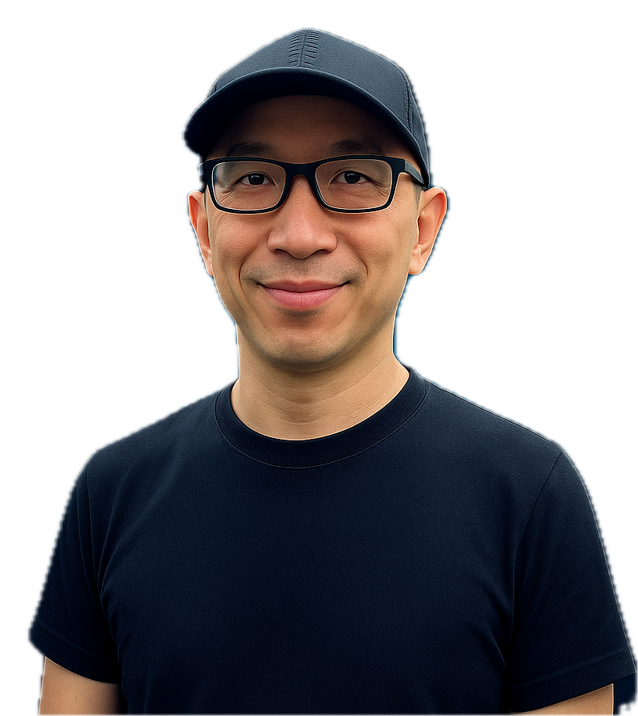

Independent Quantitative Research 独立量化研究
Daily US equities market insights — powered by machine learning & Agentic AI, published every trading day. 每日美股市场深度洞察报告——机器学习与智能体AI驱动，每个交易日准时发布。
K2J AI Quantitative Lab is a daily, full-market multi-factor research system for US equities — covering regime classification, breadth analysis, statistical attribution, and dynamic risk management — built end-to-end with production-grade agentic AI. K2J AI量化实验室是一套覆盖美股全市场的每日多因子研究系统——涵盖大盘体制识别、市场广度分析、统计因子归因与动态风险管理——基于生产级 Agentic AI 端到端构建。
AI Engineering Stack: Built and generated end-to-end with LangGraph multi-agent orchestration, Agentic RAG, Pinecone vector search, and Deterministic Guardrails. 底层技术栈：基于 LangGraph 多智能体编排、Agentic RAG、Pinecone 向量检索与确定性护栏（Deterministic Guardrails），全流程端到端自主构建与生成。
How each issue is built报告的构成与方法论
Every issue follows the same five-layer pipeline, constructed daily from post-close US equities market data. 每一份报告都遵循相同的五层流程，基于每个交易日美股收盘后的全市场数据深度构建。
Market regime大盘体制判断
Classifies risk-on, risk-off, or transitional conditions before anything else is read.在解读其他信号之前，先判断大盘所处的体制——风险偏好、风险规避，或过渡阶段。
Market breadth全市场广度
Measures how many stocks are actually participating, not just the index-level headline.衡量真正参与行情的个股广度，而不只是指数层面的表面数字。
5-D attribution五维稳健归因
A five-dimensional, noise-robust statistical attribution explains what is actually driving returns.五维稳健统计归因，剔除噪音，解释真正驱动收益的因素。
Theme clusters上涨/下跌主题簇
Clusters the day's movers into coherent themes, not a loose list of tickers.将当日涨跌个股归纳为连贯的主题簇，而非零散的股票列表。
Portfolio & risk组合与风控
Translates the analysis into a portfolio stance and concrete risk-management guidance.将以上分析转化为组合策略立场与具体的风控建议。
8 Core Data Pillars Across 100+ Metrics for 1,500+ Liquid Equities 覆盖 1,500+ 只高流动性核心标的的 8 大维度 100+ 项底层全量数据网络
A reliable quantitative report cannot rely on shallow percentage changes. To ensure statistical rigor and trade execution, K2J filters the market for top liquidity and scans across 8 core categories: Asset Metadata & Consensus, Price/Volume Microstructure, Technical Oscillators, Financial Statements (TTM & FQ), Advanced Cash Flow Multiples, Growth Rates, 4 Classic Forensic Models (Piotroski / Altman Z / Sloan Ratio % / Zmijewski), and Shareholder Yield. 一份具备真实参考价值的量化报告，绝不可能只看一两个涨跌幅数字。K2J 在每个交易日收盘后，对全市场精选出的 1,500+ 只高流动性核心标的采集并计算 8 大核心维度：基础与分析师共识、量价微观结构、全周期技术指标、财务三大表深度数据、先进现金流估值倍数、复合增速、法务排雷四大经典模型（Piotroski F / Altman Z / Sloan Ratio % / Zmijewski）以及股东回报。
Strict Top-Down "Macro → Sector → Equities" Analytical Flow 严密的「宏观 → 板块 → 个股」三层推导与逆势背离预警
Never analyze a stock in isolation. Our daily reports guide you through macro wind direction first, smart money sector migration second, and individual factor attribution third — complete with automated Sector Divergence black-swan warnings. “不谋全局者，不足谋一域”。K2J 研报引导投资者先看宏观体制明确顺逆风与仓位预算，再看产业主题簇追踪万亿资金跨行业迁徙，最后深入 20 支标的 5 维归因，并配备独创的「板块逆势背离」量化破案机制。
Macro Regime大盘体制与风险预算
Evaluate benchmark ETFs and 1,500+ liquid stock breadth to determine market climate.判定大盘体制与四大指数走势，评估 1,500+ 核心标的多空广度，定总仓位水位。
Thematic Migration产业主题簇与资金轮动
Track institutional smart money rotation across emerging industry clusters.无监督聚类提取领涨领跌主题簇，锁定机构资金合力抱团赛道。
20 Focus Equities20 股深度归因与破案
5-D attribution, Causal News Intelligence, and Divergence alerts.5 维共振锁定 20 支代表，深度推理异动因果并预警逆势背离闪崩。
Real-Time Sentiment + 13F / SEC Filing Surveillance — Track Smart Money Before It Moves Markets 实时舆情监控 + 13F/SEC申报解析——在聪明钱异动前率先捕捉机构动向
Beyond pure quantitative factors, K2J deploys an NLP-powered Causal News Intelligence engine that continuously monitors and ingests 70+ authoritative financial wire services, Tier-1 business media, and regulatory filing feeds — including real-time parsing of SEC EDGAR submissions: 13F institutional holdings disclosures, 13D/13G beneficial ownership filings, Form 4 insider transactions, and 8-K material event notices. For each liquid equity, the engine computes multi-dimensional event–ticker relevance scoring, bullish/bearish sentiment polarity decomposition, and event-driven tail-risk signal extraction. 13F quarterly snapshots and interim amendments are cross-referenced against price–volume microstructure to surface divergences between disclosed institutional positioning and actual market behavior — transforming regulatory filings and unstructured news flow into a structured alpha overlay enriched with smart-money flow awareness. 在量化因子体系之上，K2J 独创性地部署了一套 NLP 驱动的因果新闻情报引擎：对 70+ 家权威财经通讯社、主流商业媒体及监管公告信源进行 7×24 小时全天候实时抓取与深度解析。与此同时，系统持续接入并解析 SEC EDGAR 全量申报数据，涵盖：13F 机构持仓季报与中期修正、13D/13G 大额持股变动申报、Form 4 内部人买卖交易以及 8-K 重大事件公告。针对每一只个股标的，引擎执行多维度「事件–标的因果关联度评分」「多空情绪极性解构」「事件驱动尾部风险信号提取」，并将 13F 机构持仓披露与量价微观结构交叉比对，实时识别“申报仓位”与“实际市场行为”之间的背离信号——将监管申报与非结构化新闻流共同转化为高信息密度的结构化 Alpha 信号层，实现“量价因子 + 舆情因子 + 聪明钱申报”三引擎共振研判。
Who's building this关于研究者
K2J is led by Justin, an AI quantitative systems architect with 20+ years in enterprise technology (Dell, Microsoft, IBM, private funds), now focused on production-grade agentic AI. K2J is the result — a LangGraph-based, Agentic RAG quantitative research system designed, built, and operated end-to-end in-house. K2J 由 AI 量化系统架构师 Justin 主导，他拥有 20 年以上企业级技术背景（戴尔、微软、IBM、私募基金），专注于生产级 Agentic AI 系统。K2J 正是这一技术积累的成果——一套基于 LangGraph 与 Agentic RAG、端到端自主设计与运行的量化研究系统。
I'm also an active options and equities trader — this research isn't academic to me; I use the same regime and attribution framework in my own positions. I work in Mandarin and English, and I'm open to business partnerships and project collaborations with individuals, teams, and organizations seeking proven expertise in both AI systems engineering and quantitative market research — whether that's a joint venture, a strategic partnership, licensing, or a custom research engagement. 我同时也是一名活跃的期权与股票交易者——这套研究框架绝非纸上谈兵，同样的体制判断与归因逻辑直接驱动实际持仓决策。K2J 支持中英双语，欢迎有意在 AI 量化系统与实盘市场研究领域深度合作的机构与团队联系探讨——包括联合项目、战略合作、研究成果授权或定制系统开发。
Published every trading day每个交易日更新
Complete archive of daily US equities quantitative analysis reports. 每个交易日更新一期，每日美股市场量化分析报告完整归档。
Frequently asked questions常见问答与技术解析
Key details on research methodology, agentic AI architecture, and collaboration. 关于量化投研框架、Agentic AI 架构设计及合作模式的核心解答。
What is K2J AI Quantitative Lab and what problem does it solve? 什么是 K2J AI 量化实验室？它解决了什么核心问题？
K2J AI Quantitative Lab is an autonomous, full-market daily quantitative research system for US equities. Built to institutional standards, it solves the fragmentation between statistical macro risk modeling and actionable trade synthesis. Following each US market close, the system synthesizes macro regimes, cross-sectional breadth, 5-dimensional factor attribution, and unsupervised theme clusters into a coherent market stance and tail-risk budget.
K2J AI量化实验室是一套面向美股全市场的每日自主量化投研系统。它以机构级标准构建，致力于解决宏观统计风险建模与交易实盘落地之间的断层。系统在每个交易日美股收盘后自动运行，将宏观体制识别、截面市场广度、五维因子统计归因与无监督异动主题簇整合成清晰的组合策略立场与尾部风控预算。
How does the 5-layer quantitative methodology work? K2J 的五层量化多因子方法论是如何运作的？
Every issue follows a strict, orthogonal five-layer analytical pipeline: (1) Market Regime classifies Risk-On/Risk-Off macro states via GBDT ensembles; (2) Market Breadth quantifies internal market participation across volume and moving average thresholds; (3) 5-D Attribution performs robust WLS and PCA to isolate Market, Size, Value, Momentum, and Volatility return drivers; (4) Theme Clusters utilizes HDBSCAN and high-dimensional semantic embeddings to group stock movers into narrative drivers; and (5) Portfolio & Risk computes dynamic volatility targets and CVaR tail-risk constraints under Bayesian risk parity.
每一期报告都严格遵循自底向上的五层正交分析流水线：(1) 大盘体制识别：基于 GBDT 集成模型判别 Risk-On / Risk-Off 宏观状态；(2) 全市场广度：多维度量个股实际参与度与量价背离；(3) 五维稳健归因：使用稳健加权最小二乘（WLS）与 PCA 剥离市场、规模、价值、动量与波动率的纯净因子收益；(4) 主题簇提取：通过 HDBSCAN 与高维语义向量聚类识别异动股票背后的核心叙事；(5) 组合与动态风控：在贝叶斯风险平价框架下，输出 CVaR 约束与仓位配置指导。
How is Agentic AI and LangGraph utilized in production? K2J 是如何利用 LangGraph 与 Agentic RAG 构建生产级 AI 架构的？
K2J runs on an autonomous multi-agent orchestration architecture built with LangGraph. Specialized agents handle automated data ingestion, statistical computation, signal cross-verification, natural language synthesis, and multilingual deployment. To ensure zero financial hallucination, the system enforces Deterministic Guardrails — mathematical proofs and hard numeric constraints that gate all generative outputs before publication. Historical market context is augmented via Agentic RAG over a Pinecone vector index.
K2J 基于 LangGraph 构建了端到端的自主多智能体（Multi-Agent）编排架构。专门的子智能体分工负责数据自动摄取、统计模型计算、信号交叉校验、多语言自然语言生成及 CDN 部署。为确保金融严谨性并彻底杜绝大模型幻觉，系统内置了确定性护栏（Deterministic Guardrails），所有输出均需通过严格的数学约束检验；同时结合 Pinecone 向量数据库的 Agentic RAG 进行历史体制情境关联。
Who is behind K2J, and what collaboration opportunities exist? K2J 团队有什么背景？目前支持哪些形式的商业与项目合作？
K2J is led by Justin, an AI quantitative systems architect with 20+ years of enterprise technology leadership (Dell, Microsoft, IBM, private funds) and an active options/equities trader. K2J is open to business partnerships and project collaborations — joint ventures, strategic partnerships, research licensing, or custom quantitative system development — with hedge funds, prop trading firms, asset managers, and AI ventures seeking proven end-to-end expertise in AI systems engineering and quantitative market research.
K2J 由 AI 量化系统架构师 Justin 主导，他拥有 20 年以上企业级核心技术经验（曾任职于戴尔、微软、IBM 及私募基金），同时也是一名美股与期权市场的活跃交易者。欢迎量化私募、对冲基金、资产管理公司及 AI 创新团队探讨商业合作——包括联合项目、战略合作、研究成果授权或量化系统定制开发。
How extensive is the data collected for each stock? 每期研报覆盖多少只股票？需要收集哪些维度的数据？
Each issue scans 1,500+ liquid US equities post-close (filtered by strict institutional liquidity thresholds to eliminate illiquid noise). For every stock, our pipeline ingests and computes across 8 core pillars (100+ granular metrics): (1) Asset Metadata & Analyst Consensus; (2) Multi-period Price, Volume & Extended-Hours Microstructure; (3) Full-period Technical Oscillators & 5-System Pivot Points; (4) Financial Statements (TTM & FQ Income, Cash Flow, Balance Sheet); (5) Advanced Cash Flow Multiples (EV/EBITDA, P/FCF); (6) Growth Rates; (7) 4 Classic Forensic Quant Models (Piotroski F, Altman Z, Sloan Ratio %, Zmijewski); and (8) Shareholder Yield. This exhaustive data network ensures our research penetrates market noise.
美股市场股票众多，为确保统计有效性与实盘可执行性，K2J 设立了严格的流动性准入门槛（过滤无成交量的微盘僵尸股），每期报告在收盘后对全市场精选的 1,500+ 只高流动性核心标的进行全量扫描与深度计算。对每只股票计算 8 大维度超过 100 项底层数据：(1) 基础元数据与分析师共识；(2) 多周期量价、实体意图与盘前盘后微观结构；(3) 全周期技术指标与 5 大流派枢轴点矩阵；(4) 财务三大报表深度数据 (TTM & FQ)；(5) 先进企业价值与现金流估值倍数；(6) 跨周期复合增速；(7) 财务比率与法务排雷四大经典量化模型（Piotroski F / Altman Z / Sloan Ratio % / Zmijewski）；(8) 股东回报与分红政策。确保报告不是表面行情的复读，而是穿透全市场的底层结构性归因。
How does K2J screen the daily 20 focus stocks and what makes them unique? 研报是如何筛选每日 20 支焦点股票的？这些股票有什么特点？
Selection follows a strict 3-layer funnel: Layer 1 (2 Extreme Movers): The market's #1 gainer and #1 decliner automatically qualify to ensure no market extreme or black swan is missed. Layer 2 (18 Resonance Leaders): Ranked by 5-D factor resonance tier (5/5★ → 4/5 → 3/5), composite attribution score, and sub-industry alignment ratio (≥50%) to filter out isolated noise. Layer 3 (Diversity Cap): Maximum 3 tickers per cluster and 3 per sub-industry to ensure macro market breadth. Screened equities exhibit strong multi-dimensional resonance where price action aligns with genuine institutional volume, cash flow support, and forensic health.
遴选严格遵循三层漏斗：第 1 层——极值焦点必选 (2 席)：全市场涨幅最大与跌幅最大个股自动占位，确保极端异动或黑天鹅不被遗漏。第 2 层——5 维共振主线 (18 席)：由 5 维归因模型根据共振星级（5/5★ → 4/5 → 3/5）、综合归因分与行业同向率 (≥50%) 综合排序选出。第 3 层——多样性约束：同一主题簇最多 3 只、同一细分行业最多 3 只，确保覆盖市场主要产业核心主线。入选标的的共同特征是：其异动能被宏观、板块、资金流、技术突破与基本面多个独立维度同时合理解释（共振），而非仅靠单日消息面的杂音个案。
What does the "Sector Divergence" warning badge mean? 报告中「板块逆势背离」预警标识代表什么？
When a stock's price action contradicts its underlying sub-industry (e.g., gold miners rally +2.81% across 80% of peers, but one specific miner plunges -9.35%), the system flags it as Sector Divergence. The model assigns a punitive score of -2.0 to its D2 Sector dimension and deducts -0.50 from its composite Z-score, classifying it as an Isolated Divergence Drop rather than a broad short. Such drops typically stem from company-specific black swans (e.g., dilutive offerings, clinical rejections). Our AI engine extracts the exact breaking catalyst and displays an orange [Divergent] alert banner atop the card to warn against blind dip-buying.
当某只个股的涨跌事实与所属细分行业整体大势发生严重矛盾与撕裂时（例如黄金板块全线均涨 +2.81%、80% 个股上涨，而个股 SA 却暴跌 -9.35%），系统会触发「板块逆势背离 (Sector Divergence)」警示。模型会对其 D2 板块共动维度赋予惩罚性负分 -2.0，综合 Z 分扣减 -0.50，合理压低其综合评分，角色打标为「逆势背离焦点」而非「顺板块做空代表」。这类异动通常源于公司特异性突发黑天鹅（折价增发、FDA 审查受阻、业绩暴雷等）。研报通过 AI 深度因果解析还原事件真相，并在卡片顶部悬挂醒目的 [逆势背离] 预警横幅，提醒投资者切勿盲目抄底接飞刀。

Get in touch欢迎联系
Open to conversations with individuals, teams, and organizations interested in business partnerships, quantitative research licensing, AI systems development, or strategic collaboration. 欢迎所有对商业合作、量化研究授权、AI 系统开发或战略合作感兴趣的个人与组织随时联系。